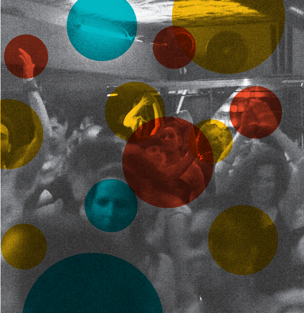
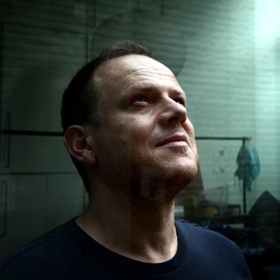
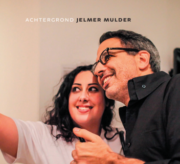

Artikelen
Spelen voor volwassenen - een avond ecstatic dance
Spelen voor volwassenen - een avond ecstatic dance
13 juni 2022
Reportage naar het fenomeen ecstatic dance, een vorm van uitgaan waarbij je niet mag praten, drinken of drugs gebruiken.
artikelInterview met Sam De Graeve van Uitgeverij Borgerhoff & Lamberigts
Interview met Sam De Graeve van Uitgeverij Borgerhoff & Lamberigts
28 januari 2022
De Graeve stuitte op niet eerder verschenen brieven van Gerard Reve. Hij verzamelde ze in Zeer Fijne Boy. Brieven aan Jef R.
artikelDe alomtegenwoordige Ottolenghi
De alomtegenwoordige Ottolenghi
17 maart 2022
Achtergrond - Wat maakt de keuken van Ottolenghi zo succesvol in Nederland en de wereld?
artikel